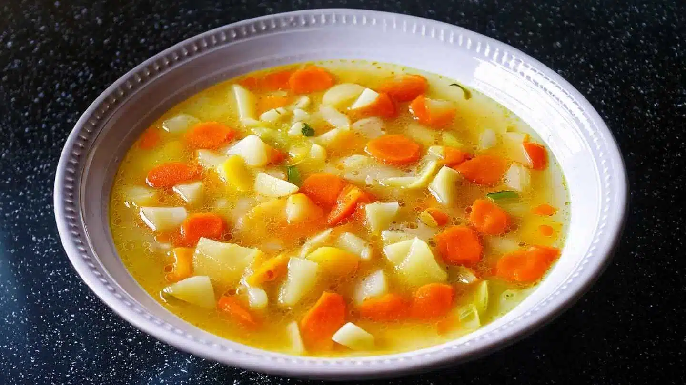

Porrusalda

Introducción
¿Qué es la porrusalda? La porrusalda es una sopa típicamente casera, pero no se trata de cualquier sopa: sino de una que tiene como base el puerro, de ahí su nombre.
En su versión más clásica, la receta original de porrusalda lleva puerro, patatas (papas), ajo y caldo. Y si bien hay algunas versiones que llevan bacalao, como la porrusalda de bacalao, o incluso merluza, la esencia de esta sopa es la sencillez de las verduras.
La sopa porrusalda es de esas preparaciones que parecen haber nacido para los días fríos. Es ligera, pero con carácter; simple, pero llena de matices. Y como toda receta de la vieja escuela, hay muchas maneras de hacerla y cada casa tiene la suya.
Ingredientes
- 3 puerros grandes
- 3 patatas medianas
- 3 zanahorias
- 1 diente de ajo
- 1 litro de caldo de verduras
- 1 hoja de laurel
- Sal y pimienta a gusto
- Aceite de oliva virgen extra
Preparación
- Limpiar bien los puerros, cortar la punta y trozarlos en rodajas finas.
- Pelar las patatas y cortarlas rústicamente en trozos medianos, (para chascar la patata, hacer un pequeño corte con el cuchillo en diagonal e ir rompiendola en lugar de cortarla completamente. Esto ayuda a que suelten más almidón). Cortar también las zanahorias en rodajas.
- En una olla grande, calentar un poco de aceite de oliva y sofreír el ajo picado sin que se queme.
- Añadir los puerros y cocinar a fuego medio hasta que estén tiernos.
- Incorporar las patatas y las zanahorias y mezclar bien.
- Verter el caldo caliente, agregar la hoja de laurel, salpimentar y dejar cocinar a fuego lento unos 25-30 minutos, hasta que las patatas y las zanahorias estén blandas.
- Probar y ajustar la sazón si es necesario. Apagar el fuego y dejar reposar unos minutos.
- Retirar la hoja de laurel y servir bien caliente, con un chorrito de aceite de oliva por encima.
Home